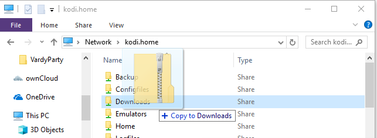

- //kodi
- //kodi.local
- //kodi.home

Use "libreelec" for both the username and password if asked

- Add-ons
- In the top-left click the Box icon

- Install from zip file
- Home folder
- downloads

- click "repository.iwantmyfreetv-1.0.1.zip"
- Install from repository
- iwantmyfreetv Add-on Repository
- Video add-ons
- Vardy Party
- Install